Recipes
Dinner, by way of everywhere
44 recipes — one for every jar — passed down from market stalls, home kitchens and grandmothers on five continents.

Middle Eastern Manqual
Grilled Chicken Kebabs
1 hr 35 minServes 4–6Warm
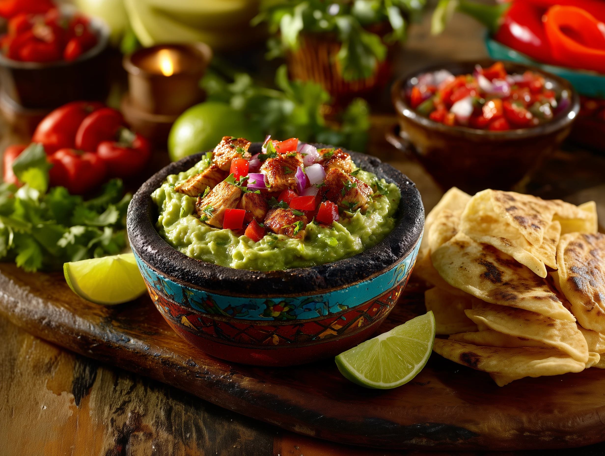
Hacienda Salsa Guacamole
Fiesta Guacamole
15 minServes 6Warm
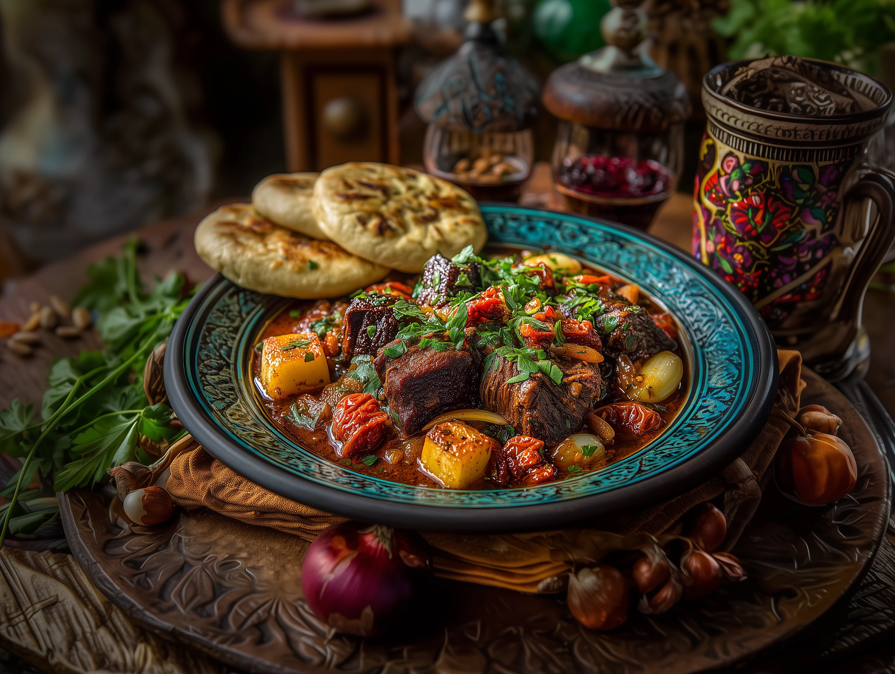
Tangier Ras El Hanout
Moroccan Lamb Tagine
2 hr 20 minServes 6Mild
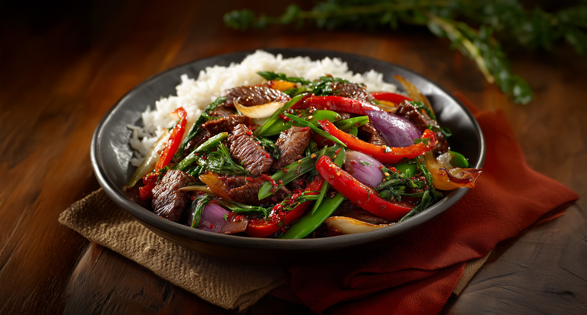
Szechuan Five Spice
Spicy Beef Stir-Fry
30 minServes 4Medium
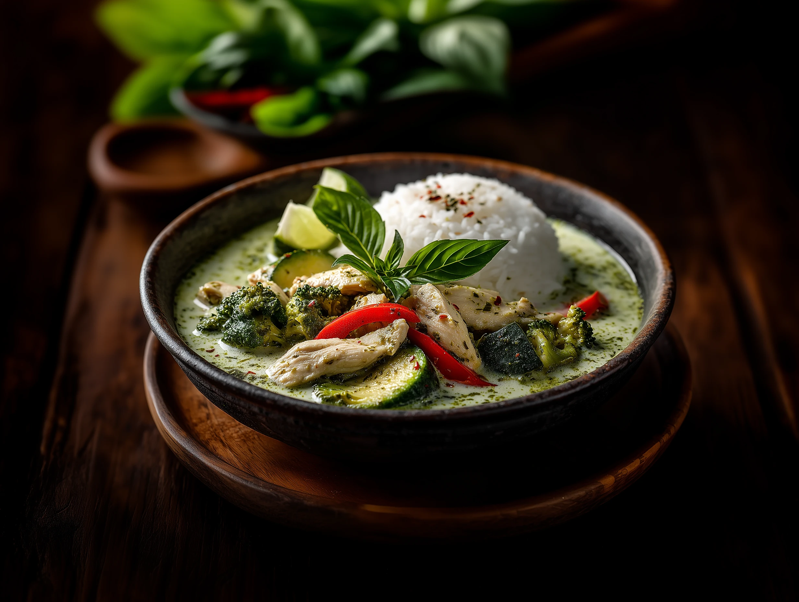
Bangkok Green Curry
Thai Green Curry with Chicken & Vegetables
45 minServes 4Medium
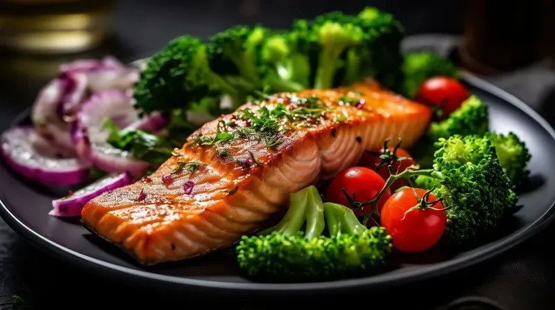
Himalayan Pink Salt
Pink Salt & Citrus Salmon
25 minServes 4
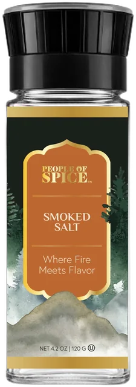
Smoked Salt
Smoked Salt Jammy Eggs on Toast
12 minServes 2
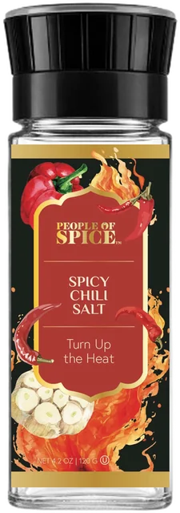
Spicy Chili Salt
Street-Cart Mango Cups
10 minServes 4Hot
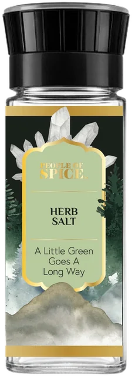
Herb Salt
Crispy Herb Salt Potatoes
55 minServes 4
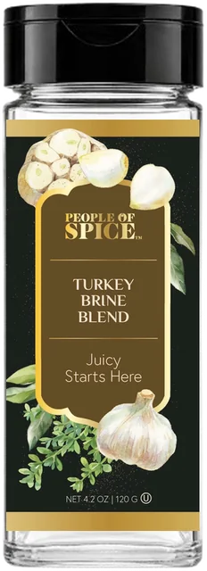
Turkey Brine Blend
Overnight Herb-Brined Turkey Breast
13 hr 50 minServes 6–8
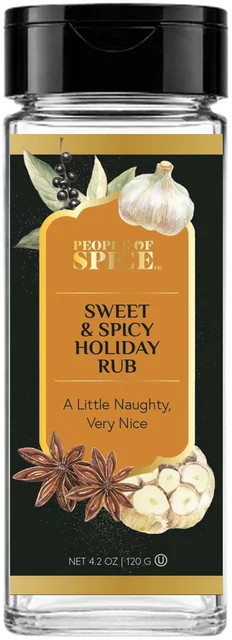
Sweet & Spicy Holiday Rub
Sweet & Spicy Glazed Ham
1 hr 45 minServes 10Medium
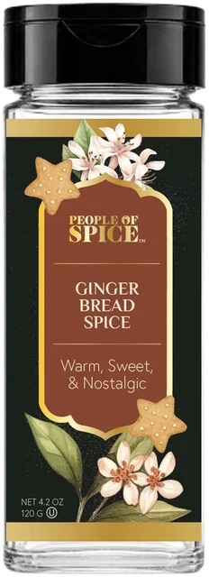
Gingerbread Spice
Gingerbread Skillet Cookie
37 minServes 8Mild
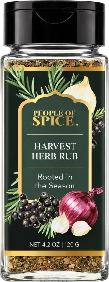
Harvest Herb Rub
Harvest Roasted Roots with Maple
55 minServes 4–6
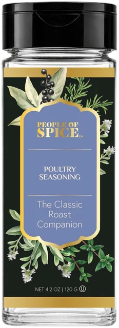
Poultry Seasoning
Classic Sunday Roast Chicken
1 hr 30 minServes 4
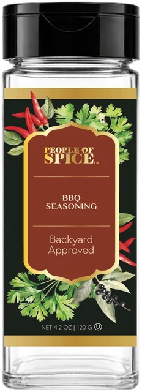
Texas BBQ
Texas-Style Oven Ribs
3 hr 15 minServes 4Warm

Shawarma
Sheet-Pan Chicken Shawarma
1 hr 15 minServes 4Mild
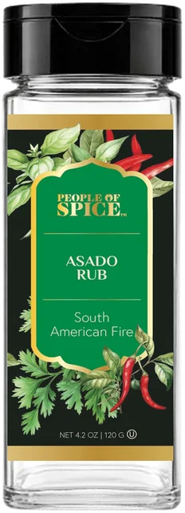
Asado Rub
Asado Skirt Steak with Chimichurri
25 minServes 4Warm

Za'atar
Za'atar Manakish
25 minServes 4
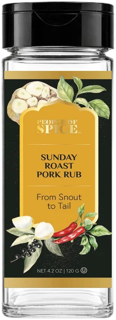
Sunday Roast Pork Rub
Crackling Sunday Pork Shoulder
4 hr 15 minServes 6Mild
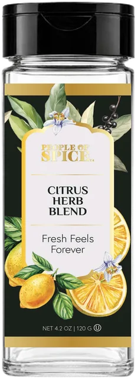
Citrus Herb Blend
Citrus Herb Baked Cod
25 minServes 4
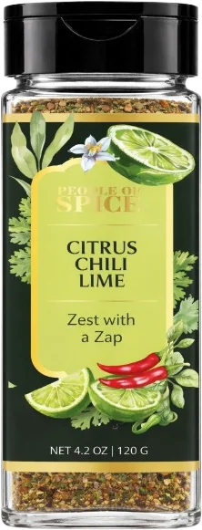
Citrus Chili Lime
Chili Lime Elote
22 minServes 4Medium
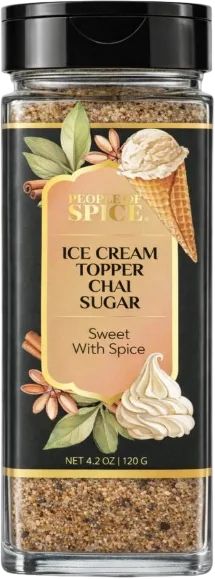
Chai Sugar
Chai Sugar Affogato
5 minServes 2
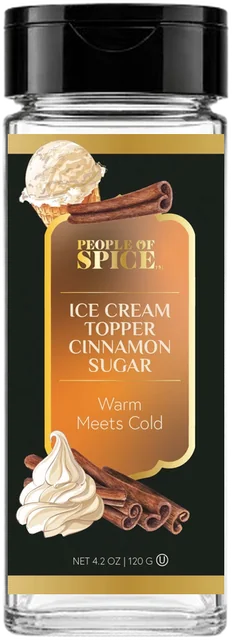
Cinnamon Sugar
Cinnamon Sugar Churro Bites
30 minServes 4
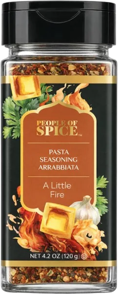
Arrabbiata
Penne all'Arrabbiata
25 minServes 4Medium
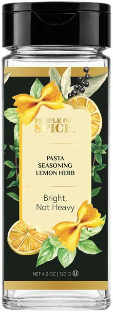
Lemon Herb
Spaghetti al Limone
17 minServes 4
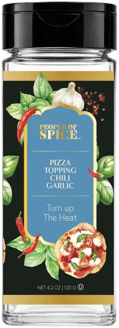
Chili Garlic
Chili Garlic Hot Honey Pizza
27 minServes 2–3Hot
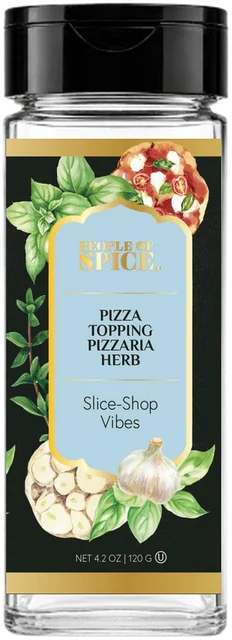
Pizzeria Herb
Pizzeria Garlic Knots
35 minServes 6
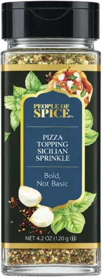
Sicilian Sprinkle
Sicilian Sheet-Pan Focaccia
2 hr 45 minServes 8Mild
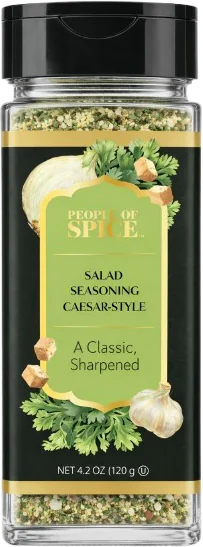
Caesar-Style
Grilled Caesar Wedges
20 minServes 4
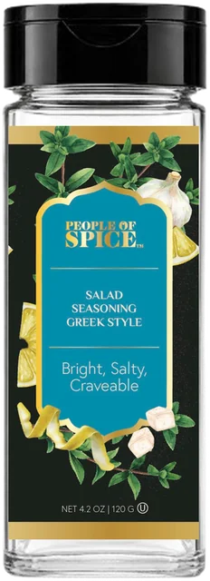
Greek Style
Horiatiki Greek Salad
15 minServes 4
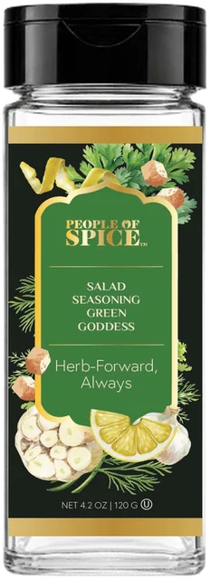
Green Goddess
Green Goddess Crunch Bowl
15 minServes 2

Paprika
Chicken Paprikash
55 minServes 4Mild

Smoked Paprika
Patatas Bravas
50 minServes 4Mild

Herb & Chive Potatoes
Herb & Chive Champ
30 minServes 4–6

Turmeric
Golden Tadka Dal
45 minServes 4
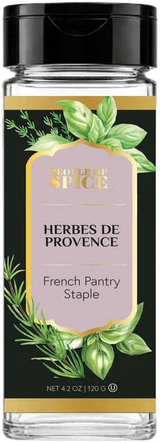
Herbes de Provence
Sheet-Pan Ratatouille
1 hrServes 4–6
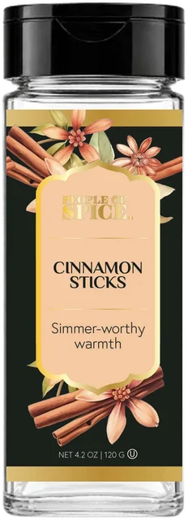
Cinnamon Sticks
Mulled Apple Cider
30 minServes 6
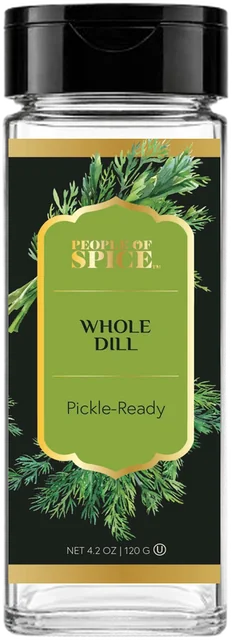
Whole Dill
Quick Dill Pickles
24 hr 20 minServes 1 jar
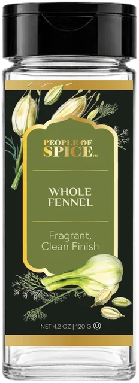
Whole Fennel
Fennel & Orange Pork Chops
25 minServes 4
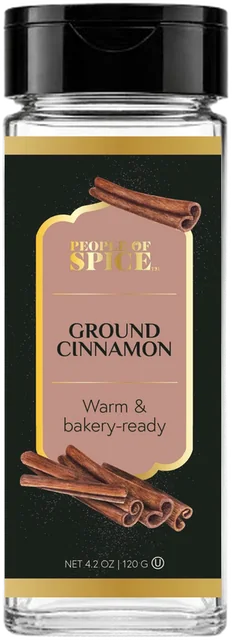
Ground Cinnamon
Cinnamon Swirl Banana Bread
1 hr 15 minServes 10
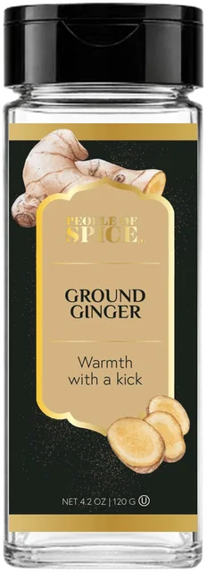
Ground Ginger
Silky Ginger Carrot Soup
40 minServes 4Mild

Parsley
Herb-Heavy Tabbouleh
20 minServes 4
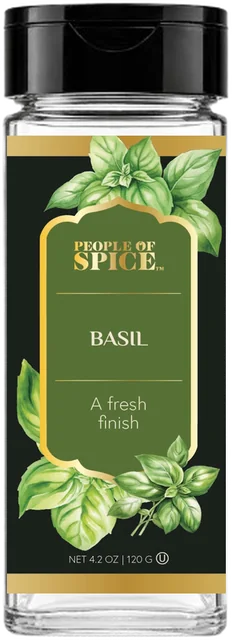
Basil
Roasted Tomato Basil Soup
55 minServes 4
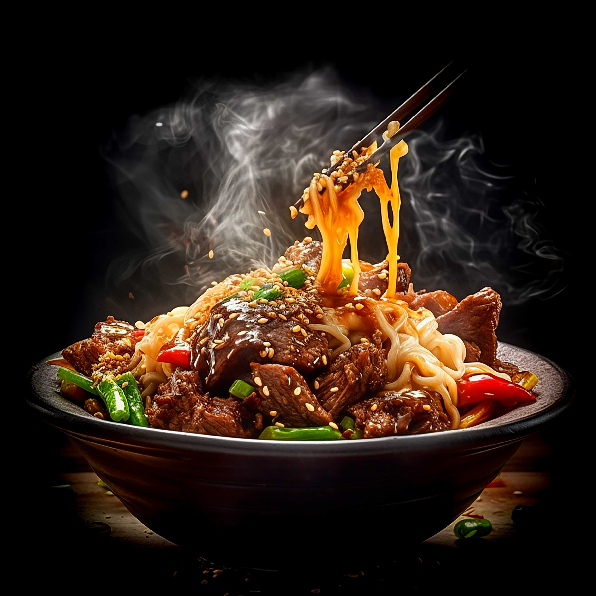
Whole Star Anise
Weeknight Phở Bò
1 hrServes 4
Nothing cooking with that search — try an ingredient like “lime”.